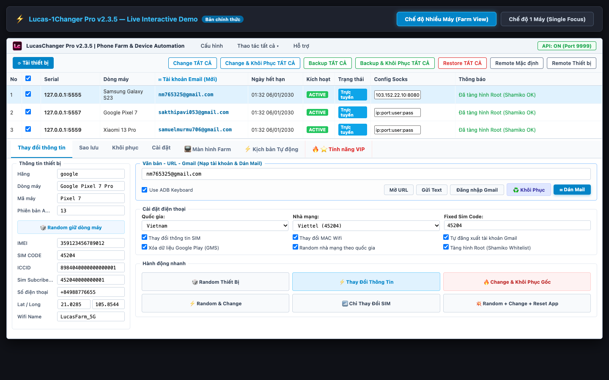

LUCAS-1CHANGER PRO v2.3.5
Cẩm Nang Hướng Dẫn Sử Dụng & Vận Hành Hệ Thống Phone Farm Tự Động Hóa Chuyên Nghiệp
📑 Danh Mục Hướng Dẫn Nhanh:
⚡ 1. Hướng Dẫn 1-Click Cài Ngay Dàn Máy Cho Khách & Tester
Cơ chế Zero-config 1-Click Provisioning giúp khách hàng và tester cắm cáp vào là sử dụng được ngay cho 1 máy lẻ hoặc toàn bộ dàn Phone Farm 10 đến 50+ máy cùng một lúc mà không cần gõ dòng lệnh ADB nào.
Bước 1: Chuẩn bị Điện thoại & Cắm Cáp USB
- Điện thoại Android (Android 9 đến 14) đã ROOT (bằng Magisk, KernelSU hoặc APatch) và đã cài LSPosed.
- Vào Cài đặt -> Tùy chọn nhà phát triển -> BẬT Gỡ lỗi USB (USB Debugging).
(Riêng máy Xiaomi/Redmi/POCO/HyperOS: Bật thêm dòng "Gỡ lỗi USB (Cài đặt bảo mật)"). - Cắm cáp USB nối điện thoại vào máy tính (cắm 1 máy hoặc cắm cả dàn vào Hub USB). Màn hình điện thoại hiện popup hỏi "Cho phép gỡ lỗi USB từ máy tính này?" -> Tick "Luôn cho phép từ máy tính này" và bấm OK.
Bước 2: Mở Lucas-1Changer Pro & Đăng Nhập
- Chạy trực tiếp file
LucasChanger_Pro_v2.3.5.exe(hoặcLucasChanger_Pro.exe). - Tại màn hình đăng nhập: Nhập Tài khoản & Mật khẩu được Admin cấp. Hệ thống tự động nhận diện mã phần cứng máy tính (HWID duy nhất). Tick "Ghi nhớ đăng nhập trên máy này" và bấm ĐĂNG NHẬP VÀO HỆ THỐNG.
Bước 3: Bấm Nút "⚡ SETUP PHONE 1-CLICK" Trên Thanh Công Cụ
- Tại thanh công cụ đỉnh màn hình, bấm vào nút màu Tím Neon nổi bật: ⚡ SETUP PHONE 1-CLICK.
- Cửa sổ "Trung Tâm Cài Đặt Phone Farm 1-Click" hiện ra, tự động phát hiện danh sách máy cắm cáp và tích sẵn các quyền:
- 🧹 Dọn sạch triệt để tàn dư tool cũ khác trên thị trường: Quét sạch toàn bộ tàn dư hook, database, file config của các tool cũ để chống xung đột, văng app hay crash Zygote.
- 📦 Tự động nạp & cài đặt LucasSpoofer.apk: Module Xposed lõi chịu trách nhiệm hook sâu phần cứng.
- 🔍 Tự động cài đặt DeviceInfo.apk: Ứng dụng kiểm tra và đối chiếu thông số độc lập.
- 💡 Cấu hình màn hình luôn sáng & tắt ngủ: Giữ thiết bị luôn sẵn sàng kết nối, không bị ngắt quãng khi treo máy qua đêm.
- ⚡ Cấp quyền Root tối cao & Soft Reboot Zygote (5 giây): Kích hoạt toàn bộ hook hệ thống mà không cần tắt mở lại nguồn máy.
- Bấm nút ▶ BẮT ĐẦU CÀI ĐẶT 1-CLICK. Toàn bộ dàn máy sẽ được cài đặt đồng loạt chỉ trong vài giây!
Bước 4: Kích Hoạt Module Trên LSPosed (Chỉ làm 1 lần duy nhất)
- Mở ứng dụng LSPosed Manager trên điện thoại -> Chọn mục Modules -> Bấm chọn Lucas Spoofer.
- Gạt BẬT công tắc Kích hoạt Module -> Tick chọn các app bạn cần đổi máy (Khung Android, Dịch vụ Google Play, Game, App Offer...).
- HOÀN TẤT! Dàn máy đã sẵn sàng 100% để Change thiết bị và chạy tự động hóa!
📱 2. Quản Lý Thiết Bị & Chuẩn Hóa Cột "Dòng Máy" (Bản Mới v2.3.5)
Một trong những nâng cấp quan trọng nhất của phiên bản v2.3.5 là việc thay thế hoàn toàn cột "Tên máy" bằng cột "Dòng máy" thân thiện và thông minh.

Tại sao lại là "Dòng máy" thay cho "Tên máy"?
- Xóa bỏ mã kỹ thuật khó hiểu: Nhiều dòng điện thoại khi truy vấn qua hệ điều hành chỉ trả về các đoạn mã mainboard hoặc mã sản phẩm thô (ví dụ:
SM-9373,SM-G973U,SM-S911U,2201123G,CPH2173...). Người dùng rất khó phân biệt đây là máy gì. - Bộ giải mã tự động (ResolveFriendlyDeviceLine): Lucas-1Changer Pro v2.3.5 tích hợp thuật toán thông minh kết hợp đọc các thuộc tính thị trường
ro.product.marketname,ro.sem.marketnamevà cơ sở dữ liệu đối chiếu phần cứng, tự động dịch các mã trên thành tên thương mại chuẩn: Samsung Galaxy S10, Samsung Galaxy S23, Xiaomi 12 Pro, OPPO Find X3 Pro...
Bố cục Form Thông Tin Thiết Bị Phân Cấp:
- Hãng (Brand): Nhà sản xuất thiết bị (Google, Samsung, Xiaomi, Sony, OPPO...).
- Dòng máy (Device Line): Tên thương mại thân thiện của dòng máy (Galaxy S23, Pixel 7, Xiaomi 13 Pro...).
- Mã máy (Model Code): Mã hiệu phần cứng kỹ thuật của dòng máy đó (SM-S911U, GVU6C, 2210132G...).
- Phiên bản Android (OS Version): Hệ điều hành đang chạy (Android 14, 13, 12...).
🖥️ 3. Tính Năng "⚡ Xếp Lưới Màn Hình Live Ra Desktop" Đa Kích Thước
Giúp người dùng dễ dàng theo dõi và điều khiển chuột/phím trực tiếp toàn bộ dàn máy trên màn hình máy tính theo bố cục lưới ngăn nắp, khoa học.

Các bước thao tác:
- Tại thanh công cụ đỉnh màn hình, bấm vào nút: ⚡ Tự xếp lưới Desktop (hoặc ⚡ Xếp Lưới Màn Hình Live Ra Desktop).
- Hộp thoại cấu hình xuất hiện:
- 📐 Lựa chọn kích thước màn hình:
Mặc định (320 x 570 px): Tỷ lệ 9:16 sắc nét, tối ưu cho màn hình Full HD hoặc 2K.Tiêu chuẩn (280 x 500 px): Kích thước cân đối, dễ dàng xếp từ 6 đến 8 máy cùng lúc.Nhỏ gọn (240 x 426 px): Rất tiết kiệm diện tích, phù hợp dàn farm 10 đến 16 máy.Lớn (360 x 640 px)&Rất lớn (400 x 710 px): Phóng to giúp soi rõ nét từng chữ nhỏ hoặc chi tiết trong game.Tự co giãn vừa Desktop (Auto Fit): Hệ thống tự đo diện tích màn hình máy tính đang có và chia đều kích thước vừa khít cho toàn bộ các máy được chọn.Tùy chỉnh (Custom W x H): Cho phép nhập kích thước Width và Height tùy ý theo nhu cầu riêng.
- ☑️ Tick chọn màn hình máy muốn xếp:
- Tự do tick hoặc bỏ tick từng máy độc lập trong danh sách.
- Cung cấp 2 nút nhanh: ✓ Chọn tất cả và ✕ Bỏ chọn cả.
- 📐 Lựa chọn kích thước màn hình:
- Bấm nút ⚡ Bắt Đầu Xếp Lưới Ngay.
Left + 2, Top + 2), xếp đều đặn sang phải theo thứ tự #1, #2, #3... Khi chạm mép phải Desktop, hệ thống sẽ tự động xuống dòng và tiếp tục xếp hàng tiếp theo từ trái sang phải, đảm bảo không bao giờ che khuất thanh Taskbar.
🤖 4. Kịch Bản Tự Động Hóa Auto Workflow Studio (Nạp Game & Thẻ Tự Động)
Tự động hóa hoàn toàn chu trình: "Đổi máy sạch -> Mở game/web -> Nạp thẻ thanh toán -> Nghỉ giãn cách -> Đổi sang thẻ tiếp theo" mà không cần thao tác thủ công bằng tay.
Bước 1: Chọn Game / App hoặc Dán Link Thanh Toán
- Nhập đường dẫn trang web thanh toán hoặc chọn gói ứng dụng game (Free Fire, Tốc Chiến, Genshin...).
- Hệ thống tự động bật ứng dụng hoặc mở trình duyệt web đến đúng địa chỉ trên thiết bị.
Bước 2: Nạp Danh Sách Thẻ Thanh Toán (CC / VCC)
- Bấm nút Nhập thẻ từ file hoặc Dán thẻ mẫu: Hệ thống tự động phân loại thẻ (Visa, Mastercard, Amex, JCB...).
- Hệ thống bốc lần lượt từng thẻ để thanh toán. Tự động bỏ qua thẻ lỗi và tạm dừng an toàn khi gặp mã lỗi 16 (Google Play Declined) để chống khóa thẻ hàng loạt.
Bước 3: Cài Đặt Gói Nạp & Chống Quét Bot Thông Minh
- Điền mã gói game bạn muốn mua (Package / Tier).
- ⚡ Cơ Chế Giãn Cách Thời Gian Giữa Các Gói Nạp:
Tùy chỉnh số giây nghỉ giữa mỗi lần nạp liên tiếp (ví dụ: 3 đến 5 giây). Khi tích chọn "Ngẫu nhiên giãn cách", hệ thống sẽ tự động nhảy số giây nghỉ ngẫu nhiên trong khoảng [Min - Max], mô phỏng hoàn hảo hành vi bấm tay của người thật để vượt qua các thuật toán chống bot khắt khe nhất của Google Play.
🛡️ 5. Sao Lưu, Khôi Phục & Lá Chắn Sandbox Tar Extraction Shield
Phân hệ sao lưu (Backup) và nạp lại hồ sơ (Restore) được thiết kế chuyên biệt để bảo toàn 100% tài khoản Google, token, app data mà không bao giờ làm hỏng hệ điều hành máy.
Lá chắn bảo vệ toàn vẹn Sandbox Shield (Bản quyền Lucas):
- Nguyên lý: Toàn bộ thao tác trích xuất và bung nén dữ liệu ứng dụng (Tar extraction) được giám sát bởi mã thông báo toàn vẹn
RESTORE_SANDBOX_INTEGRITY_TOKEN. - Chống can thiệp trái phép: Ngăn chặn triệt để tình trạng trích xuất nhầm vào các phân vùng hệ thống, bảo vệ an toàn phân vùng Root và không làm mất dữ liệu của các ứng dụng khác.
- Bảo toàn quyền hạn (Chown & Restorecon): Khi bung nén data, tool tự động khôi phục đúng UID/GID của ứng dụng mục tiêu và gán lại nhãn bảo mật SELinux, đảm bảo app mở lên mượt mà, không bị văng do lỗi Permission Denied.
Quản lý hồ sơ & Nhập dữ liệu từ tool cũ:
- Hỗ trợ tính năng [ ⬇ Nhập từ Tool cũ ]: Tự động quét và chuyển đổi dữ liệu backup từ các tool khác trên thị trường (gói nén
app_data.tar.gz, danh sáchListAppbackup.txt...) sang cấu trúc chuẩn của Lucas. - Hỗ trợ phân bổ tự động ghép cặp 1:1 giữa danh sách hồ sơ đã tick và dàn máy đang kết nối.
🔧 6. Cơ Chế Can Thiệp Sâu Phần Cứng Trên Điện Thoại Thật
Trên các dòng điện thoại thật chạy Android 10, 11, 12, 13, 14 (đặc biệt là Samsung, Xiaomi, Google Pixel, OnePlus), việc đổi thông số đòi hỏi can thiệp sâu vào các phân vùng hệ thống.
Các công nghệ can thiệp sâu độc quyền:
- Bộ quét binary resetprop đa nền tảng: Tự động tìm kiếm và thực thi
resetproptrên mọi giải pháp Root hiện nay (Magisk 20-27+, KernelSU, APatch, system binary) kể cả trong môi trường Non-interactive Shell. - Ghi đè sâu toàn bộ thuộc tính Android Treble:
Ghi đè đồng bộ các phân vùng:
ro.product.model,ro.product.system.model,ro.product.vendor.model,ro.product.odm.model,ro.product.product.model,ro.product.system_ext.model... áp dụng cho cả Model, Brand, Manufacturer, Device, Fingerprint. - Cập nhật SSAID Google Services độc lập:
Ghi trực tiếp mã SSAID vào cơ sở dữ liệu hệ thống
/data/system/users/0/settings_ssaid.xmlgiúp Google Play Services nhận diện ngay ID thiết bị mới, chống trùng lặp tài khoản. - Khởi động lại Zygote an toàn trong 2 giây:
Thực thi lệnh
setprop ctl.restart zygotegiúp System Server nạp lại toàn bộ cấu hình mới mà không cần reboot phần cứng, tiết kiệm 95% thời gian chờ đợi.
⭐ 7. Phòng Điều Khiển Phone Farm VIP (Multi-Device Matrix)
- Tường Màn Hình (Screen Wall): Xem trực tiếp đồng thời hàng chục màn hình máy trên một khung hiển thị, hỗ trợ các cỡ xem 165px, 210px, 270px.
- Điều Khiển Đồng Bộ (Master Sync Control): Chọn 1 máy làm Master (Máy chính), mọi thao tác chạm, vuốt màn hình, mở app, gõ bàn phím trên máy Master sẽ được đồng bộ 1:1 sang tất cả các máy Slave trong farm.
- Ma Trận Proxy (Proxy Matrix): Gán mỗi máy một IP mạng riêng biệt theo chuẩn
IP:PorthoặcIP:Port:User:Pass, giúp mỗi máy trong dàn có một đường truyền mạng sạch riêng rẽ. - Chế độ Siêu Tiết Kiệm Eco-Farm: Cho phép hạ FPS xuống 15-30 và Bitrate xuống 1-2 Mbps, giúp máy tính PC yếu vẫn có thể cắm và điều khiển mượt mà 50 - 100 máy Android cùng lúc mà không nóng máy hay giật lag.
- Chế độ 1 Máy (Single Focus View): Bấm nút
[🖥️ Xem 1 máy]để chuyển sang giao diện điều khiển tập trung 1 thiết bị duy nhất với đầy đủ khung phím bấm tiện ích.

🔄 8. Cơ Chế Cập Nhật Tự Động OTA 1-Click
Lucas-1Changer Pro tích hợp cơ chế cập nhật tự động qua mạng (Over-The-Air Update) kết nối trực tiếp với máy chủ CDN GitHub chính thức của Lucas Team.
- Tự động kiểm tra khi mở phần mềm: Mỗi khi khởi động, ứng dụng sẽ tự động đối soát phiên bản đang chạy với phiên bản mới nhất trên máy chủ. Nếu có bản cập nhật mới (ví dụ v2.3.5), một thông báo với đầy đủ Changelog sẽ xuất hiện.
- Cập nhật 1-Click không gián đoạn: Chỉ cần bấm "Cập nhật ngay", công cụ tự động tải file thực thi mới, giải nén và nạp lại cấu hình mượt mà, không làm mất bất kỳ dữ liệu cài đặt hay hồ sơ backup nào.
- Kiểm tra cập nhật thủ công: Tại thanh trạng thái dưới cùng bên phải của phần mềm, bạn có thể bấm nút 🔄 Kiểm tra cập nhật bất kỳ lúc nào để tải bản cập nhật mới nhất.
- Mở nhanh Hướng dẫn sử dụng: Bấm nút 📖 Hướng dẫn sử dụng ở góc dưới phải để mở ngay tài liệu cẩm nang này!
🛠️ 9. Xử Lý Sự Cố Thường Gặp (Troubleshooting FAQ)
| Hiện Tượng / Lỗi | Nguyên Nhân | Cách Khắc Phục Nhanh |
|---|---|---|
| Không nhận máy (0 thiết bị) | Cáp sạc không hỗ trợ data, chưa bật USB Debugging, hoặc chưa bấm "Luôn cho phép". | Dùng cáp USB truyền data tốt, cắm vào cổng USB sau case PC hoặc Hub có nguồn phụ. Bấm "Luôn cho phép" trên điện thoại rồi bấm "🔄 Làm Mới Dàn Máy". |
| Máy từng dùng tool khác bị lỗi văng app | Tàn dư hook và file config cũ trong hệ thống làm xung đột. | Bấm nút ⚡ SETUP PHONE 1-CLICK trên thanh công cụ -> Đảm bảo đã tích ô "Dọn sạch tàn dư tool cũ" -> Bấm Bắt đầu cài đặt. Tool sẽ quét sạch trong 3 giây. |
| Báo lỗi bản quyền HWID Mismatch | Tài khoản đã đăng nhập trên máy tính khác trước đó. | Mỗi tài khoản gắn với 1 máy tính. Nếu bạn đổi PC, hãy gửi mã HWID hiển thị trên form đăng nhập cho Admin để reset trên hệ thống máy chủ. |
| App ngân hàng / Game phát hiện Root | Chưa cấu hình ẩn Root cho app mục tiêu. | Vào Magisk/KSU/APatch -> Bật Enforce DenyList -> Thêm app mục tiêu vào DenyList -> Dùng tính năng "Ẩn ứng dụng Magisk" để đổi tên gói cài đặt. |
| Màn hình Scrcpy bị giật khi mở nhiều máy | Băng thông USB hoặc CPU máy tính bị quá tải do FPS/Bitrate cao. | Vào Tab VIP -> Kích hoạt Chế độ ECO Farm (chỉnh FPS xuống 20-30, Bitrate 1-2 Mbps) và bấm Xếp lưới Desktop lại. |
Phát triển & Phân phối độc quyền bởi Lucas Team. Mọi quyền được bảo lưu.